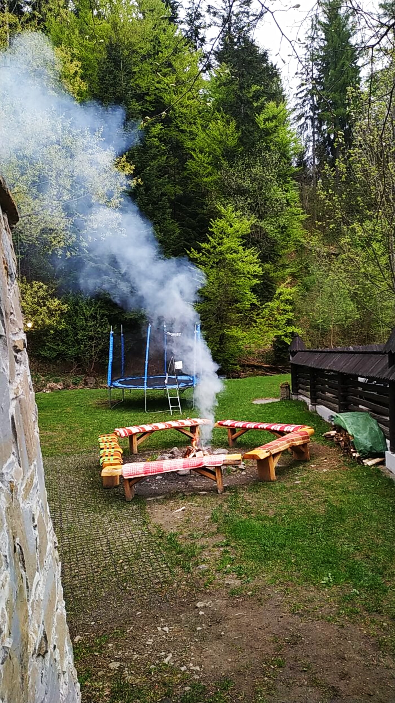
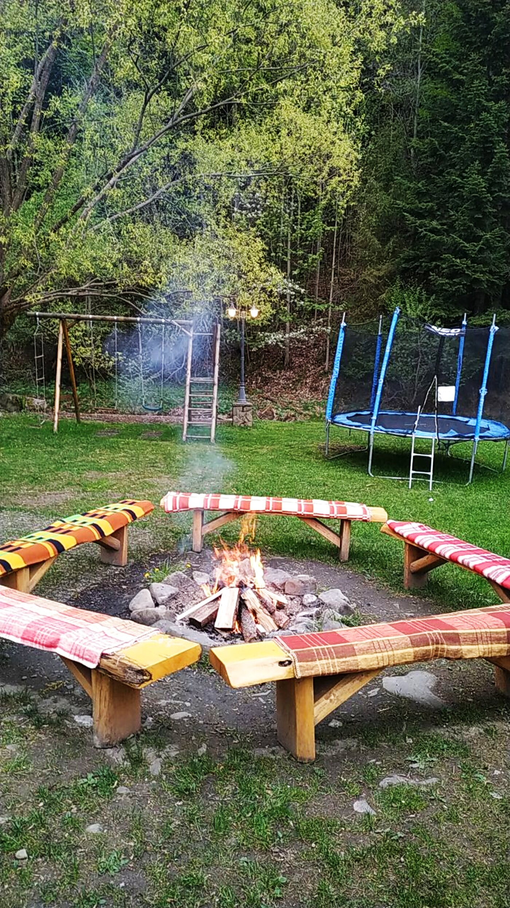

Widok przestrzeni
Naturalna kompozycja: ognisko jako centrum, drewniane ławki jako krąg rozmowy, zieleń jako tło.
Portfolio / przestrzeń wspólnotowa
Przykład prostej, żywej przestrzeni spotkań: ławki wokół ognia, las w tle, dziecięca strefa ruchu i klimat, który nie potrzebuje korporacyjnej scenografii.

Naturalna kompozycja: ognisko jako centrum, drewniane ławki jako krąg rozmowy, zieleń jako tło.

Ciepło, prostota i funkcjonalność — przestrzeń do rozmów, odpoczynku i wspólnego bycia.